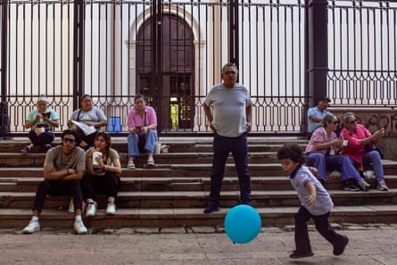
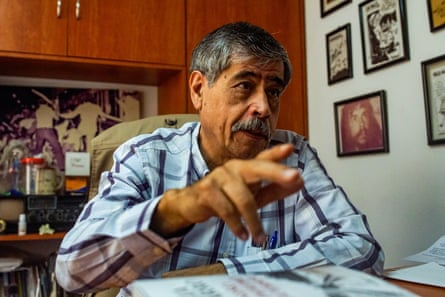
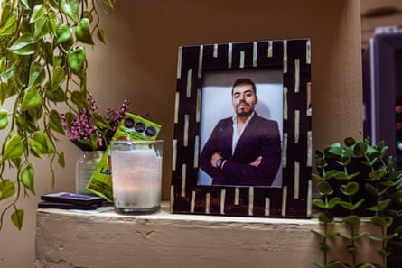
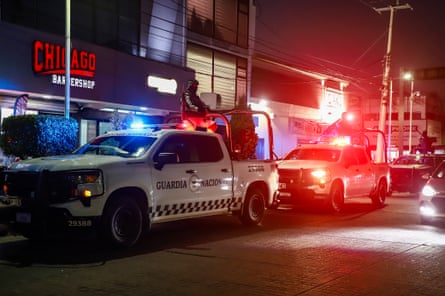
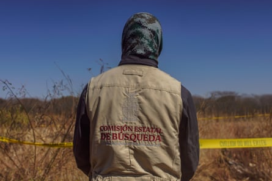
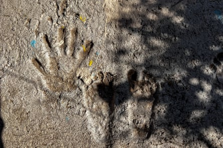

One bright recent morning, Culiacán threw a party like old times, with chefs serving up aguachile , a Sinaloan-style ceviche, and musicians blasting a riot on their trumpets and drums.
“It used to be like this every weekend,” said Alexis, one of the apprentice chefs, taking a moment in the cool quiet of the cathedral.
But away from this show of spirit in the city centre, the very violence they were defying continued. One body turned up in a river; another was burned to bones in a field on the edge of town.
Locals enjoy aguachile, a Sinaloan-style ceviche, during a day-time party in the centre of Culiacán.Photograph: Jesús Verdugo
Three months of war between rival factions of the Sinaloa cartel have left more than a thousand dead or disappeared, and a city in a unique kind of humanitarian crisis. Culichis , as the city’s inhabitants are known, are trying to return to normality – but are constantly reminded that they live at the whim of organised crime.
The conflict burst into the open on 9 September like a delayed-action bomb, six weeks after the arrest of two of Mexico’s most powerful crime bosses in El Paso, Texas.
Ismael “El Mayo” Zambada García, who founded the Sinaloa cartel with Joaquín “El Chapo” Guzmán , was detained along with one of Guzmán’s sons after a small plane touched down in the US.
As speculation whirled, El Mayo wrote a public letter accusing El Chapo’s son – also called Joaquín – of betraying and delivering him to US authorities.
There is still almost no official information about the operation behind the arrests, but El Mayo’s accusation seems all but confirmed by the war in Sinaloa, in which his son leads one faction of the cartel against another led by the two sons of El Chapo who remain free in Mexico .
The government has piled 11,000 soldiers in the city, but the violence shows few signs of ending.
Óscar Loza, a human rights activist, identified three dimensions to the humanitarian crisis in Sinaloa: homicides, forced disappearances and forced displacements.
“But now another element has come in: uncertainty,” he added. “We’ve had critical moments that lasted a day or a week – but it’s been three months.”
Human rights activist Óscar Loza.Photograph: Jesús Verdugo
More than 500 people have been killed since the conflict began, quadrupling the prior rate of homicides.
Many of the dead are believed to be cartel foot soldiers or scouts.
However, little has been made public about their identities or their deaths, as the state prosecutor’s office keeps information in reserve for months.
Many families keep quiet out of fear, or are not heard because they live outside of the state capital Culiacán.
But the family of Juan Carlos Sánchez, an entrepreneur who was killed in a shootout between gunmen and security forces in September, is pressing for answers.
“We still don’t know what happened,” said Rafael Sánchez, sitting in the empty food park that his brother built, which the rest of his family are now trying to keep alive.
A portrait of Juan Carlos Sánchez, a lawyer and entrepreneur who was killed during a shootout between cartel foot soldiers and security forces.Photograph: Jesús Verdugo
The little they know is what Juan Carlos’s wife, who was there when it happened, has been able to tell them.
When a gun battle broke out by their building, two sicarios barged into their apartment for shelter. The firing continued as the gunmen escaped through a window – then choking teargas was deployed and Juan Carlos’s wife and baby daughter were unable to breathe.
“He went out to get help,” said Rafael. “And that’s the last we know.”
An autopsy revealed that Juan Carlos died of blood loss from a femoral artery wound.
Rafael says they want to know what happened, and for the government to provide economic support for Juan Carlos’s wife and child. “And we want them to come out clearly and say that he was the victim of a bad operation,” he added. “We want his name cleaned.”
The government has deployed more than 11,000 soldiers into Culiacán during the current internal cartel war.Photograph: Jesús Verdugo
For the 504 people who have been forcibly disappeared since the war began – and the many thousands more who vanished before – such closure is a distant prospect.
In a field near the airport, Micaela González and a group of mothers were combing through the dry grass when they came across the half-burned remains of a body.
González has been searching for her sons Antonio de Jesús and Cristian Giovanni for 12 years, since they were disappeared by the police during a previous war inside the Sinaloa cartel.
“Thanks to omission, delays and the little humanity of public institutions, the investigations were not done as they should have been,” said González. “And now a lot of time has passed.
“We’ve been working this bit of land for many years,” she said. “The ground is very hard, so we tend to find [bodies] on the surface.
“I’ve lost count of how many we’ve found here.”
The police came to take the body – but a forensic backlog means it may not be identified for a long time.
An official from the agency coordinating the search for missing persons in Mexico looks at the site where half-burned human remains were found near the airport.Photograph: Jesús Verdugo
Since the war began, the mothers have been unable to search outside the city because of the risk and the fact that the state police are too tied up to accompany them.
At first, gun battles were taking place in the streets of the city. “But little by little it has moved to the countryside,” said Miguel Calderón, coordinator of the State Council on Public Security, an NGO. “And now that is displacing people.”
No one knows how many have been displaced. Many move to Culiacán or Mazatlán, a resort town, and stay with family. Then they settle wherever they can find land and security.
Along the train tracks in Culiacán, there are hundreds such families.
Sitting in a plastic chair outside a cabin he built for his family, one man, who asked to remain anonymous, described how they had to leave their community five years ago.
“If you went to the shops you were risking a bullet,” he said. “Or if you looked like you could lift a gun they kidnapped you. And either you worked for them or you turned up dead the next day.”
He couldn’t leave home to work, nor did he want to take his daughters to school. “Life became impossible,” he said. “And so we abandoned our home.”
The government was absent – or complicit. “You couldn’t tell them what was happening,” he said. “They’d hand you over to the narcos.”
By the train tracks they feel safer, even if they hear gun shots every night.
Hundreds of families displaced by violence have made a new community by the train tracks in Culiacán.Photograph: Jesús Verdugo
What worries him now is the economy. He’s a bricklayer – but no one is building. “I think the economic crisis is already here,” he said. “The debts are piling up and there’s no work to pay them off.”
As the war goes on, the toll of dead, disappeared and displaced keeps rising – and no one can say how long it will last.
“We don’t know what their inventory of guns, ammunition, men and vehicles is,” said Calderón. “I imagine they’re pulling together everything they have. This is the mother of all battles.”
Meanwhile culichis try to reclaim their lives, driven by economic need – but also the desire to take back their rights and freedoms.
“It’s going to take a while,” said Josue, a musician at the party, red-faced from blowing his horn. “It’s not like a hurricane, which comes and goes and we clean up and it’s back to normal.
“No, this is a kind of psychological damage.”